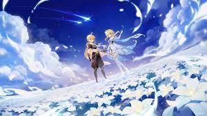

genshin impact
¿Que es?

Genshin Impact (en chino, 原神; pinyin, Yuán Shén, en japonés: 原神, romanizado: Genshin) es un videojuego de rol de acción de mundo abierto y gratuito, con una mecánica de monetización de gacha para conseguir elementos adicionales como personajes especiales y armas. Es el quinto videojuego desarrollado por HoYoverse (conocido como miHoYo en China), tras los 3 juegos principales de la serie Honkai: Honkai 3rd (Zombiegal Kawaii), Houkai Gakuen 2 (Gun Girl Z) y Honkai Impact 3rd, y Tears of Themis. Genshin Impact fue lanzado oficialmente a nivel mundial el 28 de septiembre de 2020, y se encuentra disponible en las plataformas Android, iOS, Microsoft Windows, PlayStation 4 y PlayStation 5. Está previsto un lanzamiento futuro en Nintendo Switch. Jugabilidad La principal característica de Genshin Impact es su sistema de elementos, y en Teyvat existen siete: anemo (viento), pyro (fuego), electro (trueno), hydro (agua), cryo (hielo), dendro (planta) y geo (roca).1 Los jugadores pueden aprovechar este sistema y usar combinaciones1 para causar daños mayores a los enemigos y así completar las misiones. No obstante, el uso de elementos presenta más características: Por ejemplo, la habilidad de pyro puede destruir el escudo de madera de un enemigo haciéndolo arder o la habilidad de cryo puede congelar el agua para poder caminar encima.1 El objetivo del jugador es crear un equipo con consonancia elemental para poder superar todo tipo de misiones.1 A medida que completa los encargos, se podrá incrementar el rango de aventura, que sirve para desbloquear otro tipo de tareas y subir en el nivel de mundo. Cada vez que se sube de nivel de mundo, los enemigos que el jugador encontrará serán más fuertes, y las recompensas al vencerlos también serán más altas.2 Cada personaje tiene dos habilidades, la elemental y la definitiva . La primera se puede usar en cualquier momento, excepto si está activado el tiempo de espera (TdE). La habilidad definitiva tiene un coste de energía, que se consigue derrotando a enemigos. Cada personaje controla uno de los siete elementos de Teyvat. Estos elementos también pueden hacer cambiar de estado a los enemigos. Por ejemplo, hydro causa «mojado», o cryo produce «frío». Cuando estos dos elementos se combinan, hace que el enemigo se congele de forma temporal, y el jugador puede aprovechar para atacar. Ir cambiando los personajes durante las batallas para crear reacciones elementales es el principal atractivo del juego. Genshin Impact permite el multijugador de hasta cuatro jugadores, en modo cooperativo. En este caso, se requiere que el anfitrión tengan el mismo o menor nivel de mundo que el resto de jugadores. Si hay dos jugadores, cada uno tendrá dos personajes; Si hay tres, todos tendrán un personaje a excepción del líder, que puede usar dos; Si hay cuatro jugadores, cada uno usará un único personaje. No se permite el cambio de personaje en mitad de la batalla. El sistema de cocina es otra característica importante del juego. Los jugadores pueden recolectar ingredientes obtenidos durante la aventura, así como recetas para cocinar varios platos que sirven para restaurar la salud, revivir un personaje caído en batalla o proporcionar bonos de ataque, defensa, probabilidad crítica, daño crítico, vida o bono de cualquier tipo de daño elemental. Al inicio, el jugador podrá elegir a uno de dos hermanos mellizos viajeros (su elemento inicial es anemo, pero se podrá cambiar a lo largo de la aventura) , como personaje principal. Por nombres originalmente llevan Aether (viajero) y Lumine (viajera), pero queda a elección del jugador el nombre personalizado de cualquiera que elija. Cuando se completan las primeras misiones, el jugador puede desbloquear tres personajes jugables: Amber (Pyro), Kaeya (Cryo) y Lisa (Electro). El resto de personajes se pueden obtener mediante el sistema de gachapón. Desarrollo Publicidad Genshin Impact del metro de Xiamen Después del lanzamiento oficial de Honkai Impact 3rd , HoYoverse lanzó un nuevo proyecto de juego utilizando Unity para desarrollar mejores juegos a finales de enero de 2017, cuyo propósito es mejorar el nivel de desarrollo de la compañía china y de crear juegos de mejor calidad. El equipo de producción se inspiró en la experiencia de desarrollo de The Legend of Zelda: Breath of the Wild, Grand Theft Auto Series y otros juegos para crear un sistema nuevo que, a diferencia de Honkai Impact 3rd, se caracteriza por su mundo abierto, las misiones y eventos aleatorios, y el nuevo sistema de combate y exploración. Además del doblaje chino original, el juego cuenta con la contribución de varios actores de doblaje japoneses como Rie Tanaka.5 Genshin Impact ofrece el doblaje en chino, coreano, inglés y japonés, y quince idiomas de texto: alemán, chino simplificado, chino tradicional, coreano, español, francés, indonesio, inglés, italiano, japonés, portugués, ruso, tailandés, turco y vietnamita (los idiomas italiano y turco, se incluyeron a partir de la versión 3.3).67 Ambientación Genshin Impact se desarrolla en el mundo de Teyvat, que está dividido en ocho naciones: Mondstadt, Liyue, Inazuma, Sumeru, Natlan, Fontaine, Snezhnaya y Khaenri'ah, que es una civilización que fue destruida hace quinientos años, evento el cual, tiene fuertes implicaciones en la trama del juego. En la versión más reciente, los jugadores solo pueden recorrer las primeras cinco regiones, Mondstadt, Liyue, Inazuma, Sumeru y Fontaine; y esta última sigue en espera de ampliaciones. Cada región está inspirada tanto en países y culturas como regiones del mundo real, e incorpora elementos estéticos de estos países en determinada época. Cada región está asociada a un arconte (dios) , y a su vez, cada arconte está ligado a uno de los siete elementos, sin embargo y contrario a la creencia popular ellos no deciden quienes reciben una "visión" para canalizar los poderes de un elemento.
 Ancla al título Ir a la segunda página